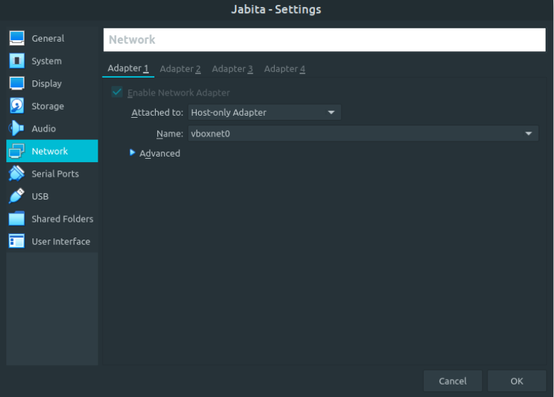
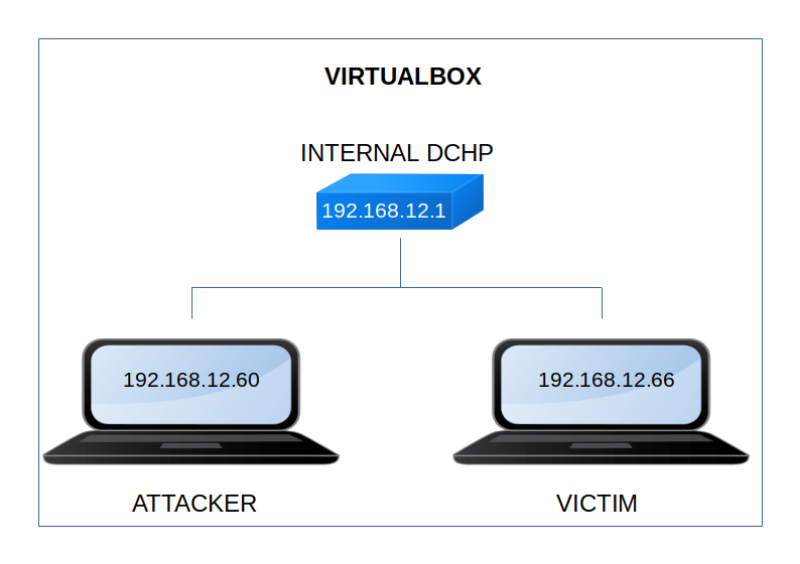

Jabita
▸ Jabita
▸ 2. Finding Services and Ports
▸ 3.2 Get user's password with Hydra
Difficulty: Low.
Flag: 2 flags.
Learning:
• Reconnaissance
Scan Network
Find services
• Enumerate
LFI Test
Get user's password
• Exploitation
Connect via SSH
• Privilege Escalation
See user's sudoers
Add payload to file
• Download (Mirror): https://downloads.hackmyvm.eu/jabita.zip
Install the machine on VirtualBox:
1. Download the file and extract it.
2. On Virtualbox choose File->Import Appliance.
3. Select the file “ova”.
4. Accept to import.


Watch your Machine IP.
$ ifconfigOutput:

Diagram
